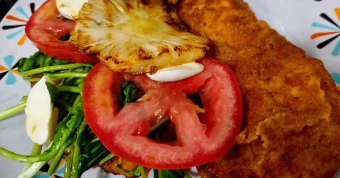

Frango com Abacaxi Douradinho e Suculento

INGREDIENTES
- 4 filés de frango
- 1 colher de sopa de vinagre de vinho
- 2 dentes de alho picados
- Sal a gosto
- 2 ovos batidos
- Farinha de rosca para empanar
- Rodelas de abacaxi (frescas)
- Azeite ou óleo para grelhar
MODO DE PREPARO
- Tempere os filés de frango com vinagre, alho e sal.
- Passe os filés na farinha de rosca, depois nos ovos batidos e novamente na farinha.
- Aqueça uma frigideira com azeite ou óleo e grelhe os filés até dourarem dos dois lados.
- Corte o abacaxi em rodelas.
- Grelhe as rodelas de abacaxi na mesma frigideira com um fio de azeite ou manteiga.
- Sirva o frango com as rodelas de abacaxi e acompanhe com uma salada de sua preferência.